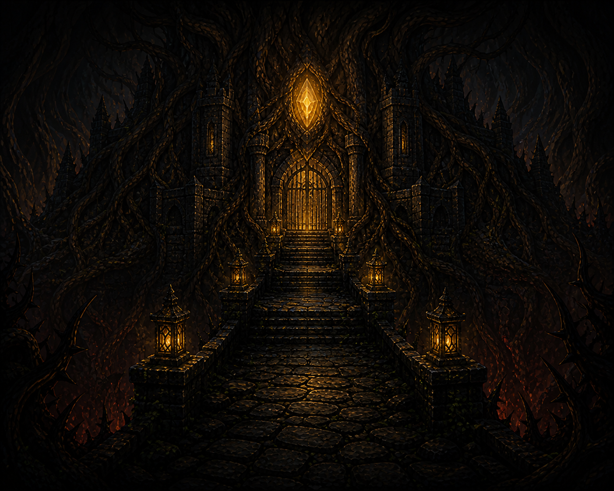
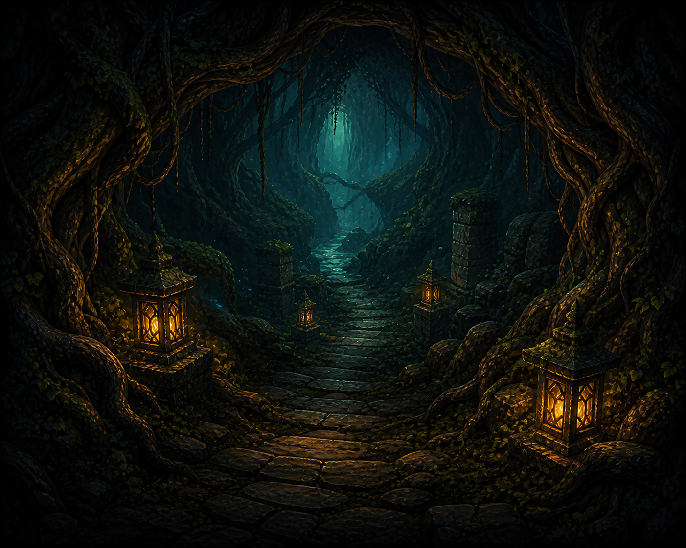
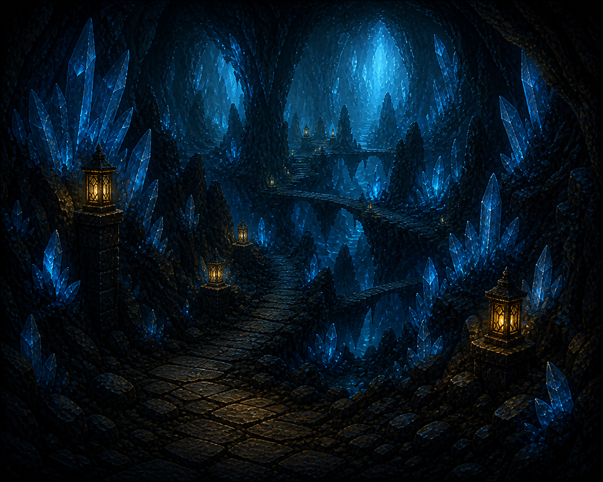
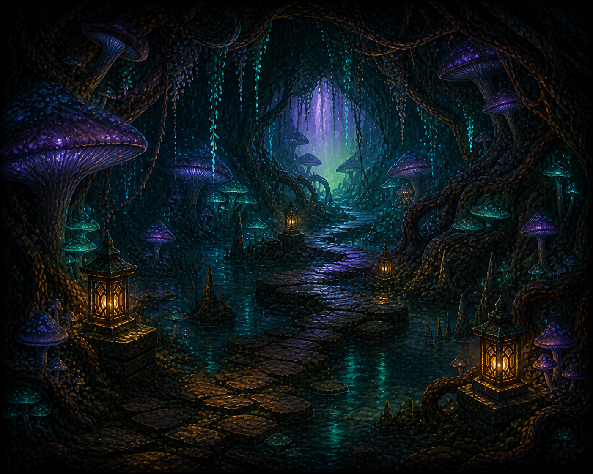
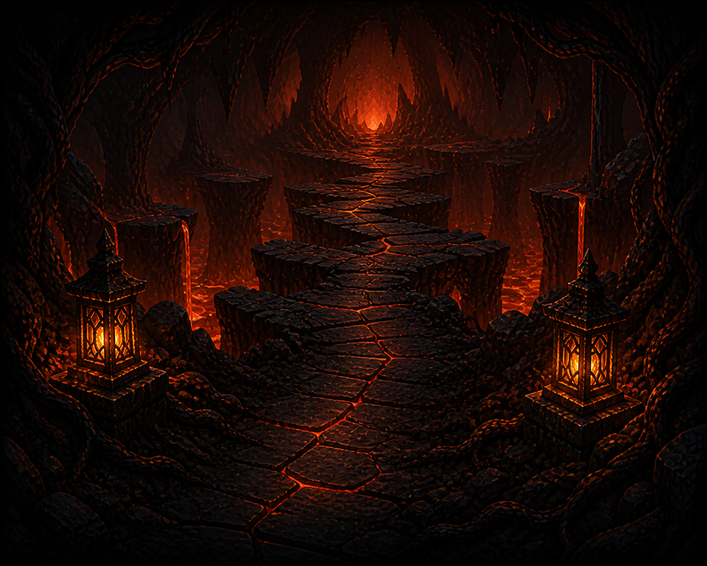
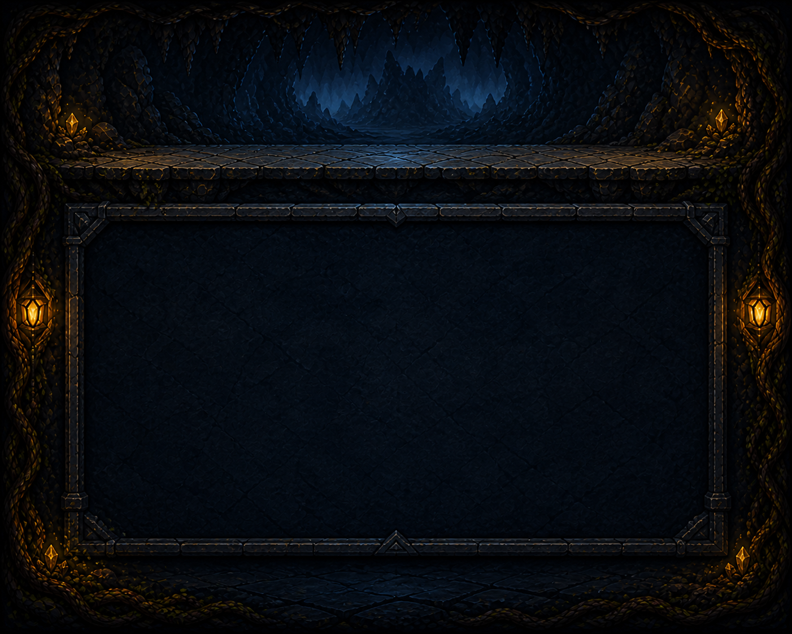

Core fantasy
조준은 짧고, 결과는 연쇄적이다.
플레이어는 드래그 또는 게임패드로 공을 발사한다. 페그 종류와 충돌 순서가 콤보·점수·피해량을 만들고, 턴 정산 뒤 사거리 안의 적이 공격하거나 전진한다. 전투가 끝나면 오브·유물·회복 보상을 고르고 다음 경로를 선택한다.
조준›충돌›피해 정산›보상›경로 선택

Gameplay engineering portfolio
공 하나를 발사하는 직관적인 조작에서 연쇄 충돌, 콤보 피해, 적의 거리 전투, 분기형 모험과 빌드 선택까지 이어지는 Windows 전용 네이티브 로그라이크 게임. 핵심 재미를 직접 설계하고 데이터·도구·플랫폼 기능까지 완결된 플레이 경험으로 연결했다.
공의 궤적이 전투와 다음 선택을 바꾸는 물리 기반 로그라이크다.
Core fantasy
플레이어는 드래그 또는 게임패드로 공을 발사한다. 페그 종류와 충돌 순서가 콤보·점수·피해량을 만들고, 턴 정산 뒤 사거리 안의 적이 공격하거나 전진한다. 전투가 끝나면 오브·유물·회복 보상을 고르고 다음 경로를 선택한다.
단순한 기능 프로토타입에 머무르지 않고 게임 규칙, 화면 연출, 콘텐츠 데이터, 입력·오디오, 저장 복구와 Windows 배포까지 실제 플레이 가능한 하나의 제품 흐름으로 연결했다.
일반 전투 5회와 상점, 최종 보스로 이어지는 7계층 런이다.
전투 노드를 눌러 경로를 조합하고 스테이지 정보를 비교할 수 있다.

고정 시작 노드. 기본 덱과 선택 난이도를 적용하고 첫 전투를 시작한다. 승리 시 25 Gold와 보상 선택 화면으로 이동한다.
각 단계를 누르면 입력이 게임 상태와 결과로 이어지는 과정을 확인할 수 있다.
Aiming → BallInFlight → ResolvingTurn
GAME STATE · AIMING마우스 드래그나 게임패드 스틱으로 방향과 세기를 정한다. 24개 점으로 첫 페그 반사까지 미리 본다.
게임 규칙과 화면·플랫폼 책임을 분리해 확장성과 검증 가능성을 확보했다.
MFC 메시지, 8개 화면 모드, GDI 렌더링, 1000×700 논리 좌표와 입력 변환.
CChildView · UiRenderer · UiViewport · UiNavigation명시적 상태 전이, 고정 시간 간격, 공·페그 충돌, 점수·피해·적 행동 이벤트.
GameWorld · GameState · Physics · PegLayout분기형 맵, 보상, 상점, 골드, 오브 덱, 유물과 난이도 수식.
AdventureRun · PlayerLoadout · Progression스테이지·효과·오디오·문자열을 각각 검증하고 실패한 카탈로그만 내장 정의로 복구.
ContentCatalog · GameplayCatalog · AudioCatalog · Localization사용자 설정과 진행 중인 모험을 버전 포맷, 원자 교체와 백업 복구로 안전하게 보존.
GameSettingsStore · RunCheckpointStoreXAudio2 다중 보이스·덕킹, Win32 자원 관리와 실행 성능 계측.
AudioPlayer · PerformanceMonitor · ResourceMonitor핵심 설계 원칙: 입력·렌더링은 플랫폼 종속이어도 규칙·상태·검증 로직은 가능한 한 순수 C++ 값과 함수로 유지한다. 이 경계 덕분에 x86/x64, Debug/Release 네 구성에서 같은 핵심 테스트를 반복할 수 있다.
설계 의도, 처리 순서, 대표 코드를 기능별로 압축했다.
Simulation
고정 시간 간격으로 공을 이동시키고, 법선·반발계수로 벽과 페그를 반사한다. Normal·Critical·Bomb·Refresh 페그가 점수와 피해를 누적하며, 사거리별 적 행동까지 한 턴 안에서 결정한다.
Roguelite loop
10개 전투 정의를 7개 계층의 경로로 만들고, 전투 후 세 가지 보상과 최대 두 개의 다음 경로를 제시한다. Goblin Market에서는 런 골드로 오브·유물·회복을 구매한다.
Content pipeline
F8 미리보기에서 배경·적·페그·이동 경로를 실제 자산으로 확인한다. 임시 카탈로그의 교차 참조와 난이도 곡선, 현재 런 호환성을 모두 통과한 경우에만 새 콘텐츠를 한 번에 활성화한다.
Interface
DPI와 창 크기에 맞춰 1000×700 논리 화면을 종횡비 고정 스케일링한다. 마우스·키보드·게임패드로 전체 런을 진행하며, 한국어/영어, 고대비 페그, 상세 툴팁, 전투 로그와 충돌 없는 리바인딩을 제공한다.
Persistence
사용자 설정과 진행 중인 런을 버전 포맷으로 분리하고 임시 파일 작성 뒤 write-through 원자 교체를 수행한다. 주 파일이 손상되면 백업을 recovery 경로에서 검증한 뒤 복원하며, 더 새로운 스키마는 덮어쓰지 않는다.
Audio
PCM WAV를 직접 검증하고 최대 8개 효과음 보이스를 동시에 재생한다. 일반 효과음은 폭주 시 생략하고 중요한 전투·승패음은 오래된 보이스를 교체하며, 음악을 각각 58%·35%로 낮췄다가 복귀시킨다.
Quality system
네 빌드 구성에서 총 4,976개 회귀를 통과한다. 콘텐츠·이미지 파이프라인, 결정적 데모와 자원 회귀를 자동화했으며 Release ZIP에는 앱 로컬 MFC/CRT, 해시와 사전 검사 스크립트를 포함한다.
조건에 맞는 기능이 없습니다. 검색어 또는 상태 필터를 바꿔 보세요.
핵심 기능의 처리 순서와 실패 정책을 의사 코드로 정리했다.
function releaseShot(pointer):
if state != AIMING or dragLength == 0:
cancelAim() // 오발·NaN 방지
return false
velocity = normalize(aimStart - pointer) * strength
state = BALL_IN_FLIGHT
every fixedStep(1 / 120 sec):
moveDynamicPegs()
if state == BALL_IN_FLIGHT:
hit = detectNextPegCollision()
if hit:
reflect(ball.velocity, hit.normal, restitution)
awardScoreAndDamage(hit.peg.type, combo)
applyBombOrRefreshEffect(hit.peg)
integrateBall()
if ballExitedField: state = RESOLVING_TURN
if state == RESOLVING_TURN:
applyPlayerAttack(pendingDamage, orb.target)
for each livingEnemy:
if enemy.inRange: executePatternOrStrike()
else: enemy.advanceExactlyOneCell()
ensureAndRelocateRefreshPegs()
advanceOrbDeck()
transitionTo(AIMING | VICTORY | DEFEAT)function saveCheckpoint(stableRunState):
snapshot = {
routeLayers, currentNode, clearedNodes,
difficulty, hp, gold, orbDeck, relics, shopState
}
if not validate(snapshot): return ERROR
writeUtf8("run.tmp", version=1, snapshot)
flush("run.tmp")
if exists("run.dat"): copy("run.dat", "run.dat.bak")
atomicReplaceWriteThrough("run.tmp", "run.dat")
function loadWithRecovery():
primary = parseAndValidate("run.dat")
if primary.valid: return primary
if primary.version > supportedVersion:
disableAutoSaveForThisRun() // 미래 저장 보호
return INCOMPATIBLE
recovery = copyToRecoveryThenValidate("run.dat.bak")
return recovery.valid ? RECOVERED : INVALIDfunction hotReloadCatalogs(activeCatalogs, currentRun):
candidate = loadIntoTemporaryObjects(
stagesIni, gameplayIni, localizationIni, audioIni
)
if not candidate.utf8AndSchemaValid:
showReloadReason(candidate.error)
return KEEP(activeCatalogs)
if not resolveAllReferences(candidate):
showReloadReason("unresolved ID or effect cycle")
return KEEP(activeCatalogs)
report = analyzeDifficultyCurve(candidate.stages)
if not report.passesThresholds:
showReloadReason(report.firstFailure)
return KEEP(activeCatalogs)
if not compatible(candidate, currentRun, currentLoadout):
showReloadReason("active run compatibility failed")
return KEEP(activeCatalogs)
activateAtomically(candidate)
preserveCurrentRouteUntilNewRun()
return RELOADEDfunction tryBindKeyboard(action, candidate):
if virtualKey(candidate) == NONE: return false
otherAction = action == PAUSE ? COMBAT_LOG : PAUSE
if binding[otherAction] == candidate:
show("입력 충돌 — 기존 설정 유지")
return false
binding[action] = candidate
atomicSave(settingsVersion=4)
return true
function cycleBinding(action):
for candidate in nextOf([SPACE, P, H, C]):
if tryBindKeyboard(action, candidate):
return changed
return unchangedfunction playEffect(cue):
if not effectGate.accept(cue): return false
category = classify(cue) // Interface / Peg / Combat / Terminal
reclaimFinishedVoices()
if activeVoices >= 8:
if category in [INTERFACE, PEG]: return false
removeOldestVoice() // 중요한 소리는 자리 확보
wave = readAndValidatePcmWave(cue.file)
voice = xaudio.createSourceVoice(wave.format)
voice.volume = effectsVolume
voice.start(wave.data)
ducking.trigger(category)
every fixedStep(dt):
fade.update(dt)
ducking.update(dt) // Combat 58%, Terminal 35%
musicGain = optionVolume * fade.gain * ducking.gain
applyOnlyWhenChanged(musicGain)
reclaimFinishedVoices()데이터 조합과 자동 분석으로 7계층 런의 난이도 곡선을 검증했다.




실효 체력·피해·적 수·사거리·이동 페그·접근 압력을 반영한 계층별 분석
일반 스테이지 9개와 보스 1개, 고유 적 안정 ID 12개, 오브 5종, 유물 5종을 제공한다. 인접 구간의 난이도 급등과 분기 불균형, 보스 비율을 자동 검사한다.
신규 콘텐츠: Cinder Orb · Verdant Orb · Ember Heart · Wayfinder Compass · Cinder Beetle · Root Lancer
코어 개발부터 제작 도구와 배포 검증까지의 성장을 정리했다.
길이가 0인 발사, 공 상태 누수, GDI 객체 수명, 포커스와 마우스 캡처 문제를 해결하고 고정 시간 루프로 재현 가능한 물리 기반을 확립했다.
GameWorld와 MFC 뷰의 책임을 나누고 Vector2, 법선 반사, 명시적 상태 전이를 도입했다. 점수·콤보·페그 효과를 자동 검증 가능한 순수 C++ 코어로 옮겼다.
조준 예상선, 첫 페그 반사, 공격·피해 애니메이션, 난이도와 접근성 옵션을 추가해 물리 결과가 운이 아니라 읽고 선택할 수 있는 정보가 되도록 했다.
오브·유물, 보스 패턴, 멀티 몬스터, 보상과 덱 순환을 연결해 한 판의 전투가 다음 선택을 바꾸는 연속 플레이 구조를 완성했다.
이동·Refresh 페그, 적 거리·사거리, 분기형 스테이지 맵과 Goblin Market을 더해 매 런의 조준 조건과 빌드 선택이 달라지도록 만들었다.
DPI 대응, 한국어·영어, 게임패드 전체 진행, 장면 음악, 콘텐츠 리포트, 결정적 데모와 장시간 성능 회귀를 통해 포트폴리오 시연 품질을 높였다.
7계층 런, 10개 스테이지, 오브·유물 5종을 구축하고 난이도 곡선 분석, F8 미리보기와 원자적 핫 리로드로 데이터 제작과 검증을 하나의 흐름으로 연결했다.
플랫폼 경로와 파일 교체를 Windows 전용 구현으로 통일해 유지보수 범위를 명확화.
인접 급등·분기 불균형·보스 비율을 빌드 단계에서 자동 검증.
전체 검증 성공 시에만 후보 콘텐츠를 활성 상태와 원자적으로 교체.
리소스·런타임·해시·사전 검사를 포함한 Windows x64 배포 패키지 완성.
Windows 전용 정리부터 콘텐츠 제작 도구와 최종 배포 검증까지 마친 결과다.
사용하지 않는 비 Windows 분기를 제거하고 저장 경로와 파일 교체 방식을 Windows API 기준으로 통일했다.
후반 스테이지와 적·오브·유물을 추가하고 경로별 난이도 상승과 분기 균형을 자동 분석하는 지표를 구축했다.
F8 전체 화면 미리보기에서 실제 배경·적·페그·이동 경로를 확인하고, 검증된 콘텐츠만 원자적으로 다시 불러오게 했다.
콘텐츠·자산·저장 호환성과 장시간 자원 안정성을 다시 검증하고 실행 가능한 Windows x64 패키지를 완성했다.
Sprint 9 최종 기준으로 Debug·Release, x86·x64 네 구성에서 각각 1,244개, 총 4,976개 자동 회귀를 통과했다. 120초 Release x64 계측도 GDI +0, USER +0, 핸들 -5로 통과했다.
핵심 코드, 최신 개발 기록, 자동 검증 결과를 근거 자료로 연결했다.
README.md
빌드·테스트·패키징 기준BUILDING.md
외부 콘텐츠 작성·검증 규칙CONTENT.md
기능 확장과 문제 해결 과정DEV_LOG/README.md
Windows 전용 구조 정리DEV_LOG/Version_9.5.md
콘텐츠·난이도 확장 기록DEV_LOG/Version_9.6.md
미리보기·핫 리로드 기록DEV_LOG/Version_9.7.md
Sprint 9 최종 검증·배포DEV_LOG/Version_9.8.md
최종 콘텐츠·난이도 검증DEV_LOG/Content_Report_9.8.md
게임 규칙과 턴 정산FinalProject_Peglin/GameWorld.cpp